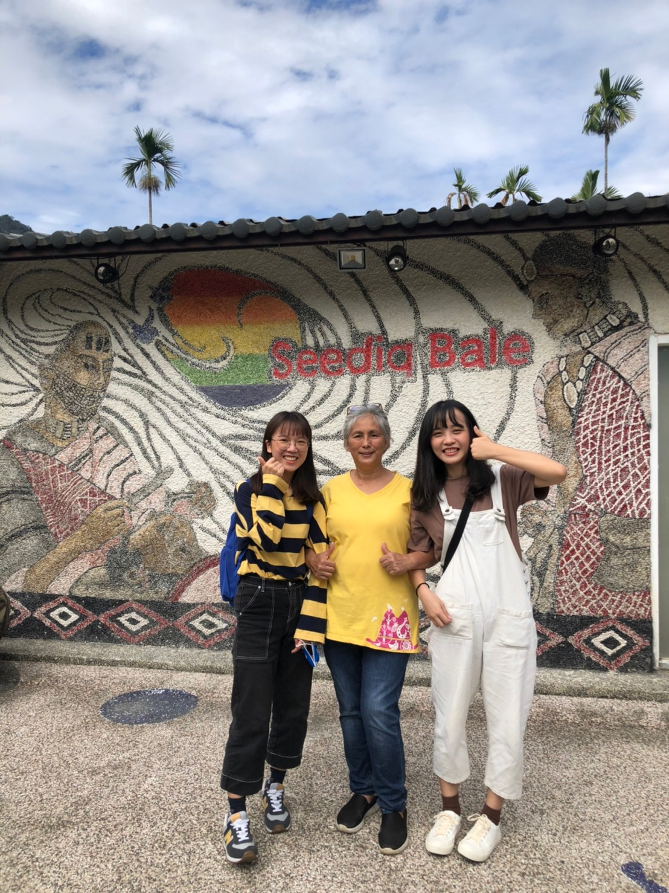

賽德克族著名的「家屋」也非常特別，除了建材全取之於大自然，因為是「半穴式」部落家屋，進去時要低著頭，並往下走，老師說這是因為在過去，如果進來的人是敵人，當下就可以馬上砍下對方的頭，以免被攻擊，算是保護自己的一種機制。族人們興建「半穴式」的部落家屋時，會先在預定的建地由地面向下挖掘約1.5~2公尺，然後在開挖的坑形地面上立柱興建。換句話說，這種家屋約有一半的形體是位於地面之下，因此稱之為「半穴式」家屋。家屋的地基大都成方形或長方形，一般依住屋的大小來增減地基周邊柱子數的多寡。
在建造家屋前，族人們得先擁有足夠的建材；因此，他們平時在森林裡狩獵或採集時，若看到適合的建材，就會先帶回來堆放在空地。通常蒐集建材的過程會花上數個月、甚至一年的時間，並依照附近環境所擁有的資源，有時也會用石材建造石板屋，或建造半石半木造的房子，最常用的屋頂材料有頁岩石板及白茅草兩種。賽德克族傳統家屋內部的陳設非常簡樸，通常室內中央為三腳式爐灶，屋內一般會有兩個爐灶，一個用於平日燒菜煮飯，設置於稍靠屋內裡側的牆邊；另一個則作為取暖用，設置於屋內中央的位置。
剛到家屋的時候，屋頂甚至還冒著煙，但老師說不用擔心，這不是火燒厝（註：閩南語，火燒房子），那是因為家屋角落總有一盆火堆，火勢不大、冒著煙，這盆火堆在賽德克族過往生活裡，有保暖、驅蟲、保鮮食物的實用功能。
清流部落社區營造──瑪姮原宿
Mahung House
「瑪姮原宿」由莫那．魯道之遺族－瑪姮．巴丸老師所經營，原宿作為部落傳統文化復興基地，擁有豐富的人文、自然生態及特色產業，老師希望能夠活化部落發展、實踐生活，並透過保存與維護，延續美好的傳統文化與環境生態。瑪姮．巴丸老師是莫那．魯道的曾孫女，最初老師決定辭掉原本在台北的工作、告別都市，義無反顧回到這個山谷裡的小村落，就是因為她發現年輕一代的賽德克孩子們，竟然對霧社事件的起因、經過、結果及後續發展處於全然「無知」狀況，而他們唯一所接收到的歷史竟然是來自於外地人所改編的電影故事，甚至覺得「霧社事件」發生在「霧社」，與清流部落無關。
由於清流部落老一輩的餘生者們將「霧社事件」視為最大的禁忌，絕口不提與抗日行動中有關的人、事、物。因此，在不能說、不能談的「噤聲」氛圍下，賽德克族文化已出現斷層，而這是一件很可怕的事情，因為歷史是不能這樣被遺忘的。為防止部落文化逐漸消失，瑪姮老師決定身肩負起歷史的印記，發起部落復甦，將部落失傳的語言、歌謠、織布、工藝…等，藉由各種方式逐一復興，並透過對外分享交流、與異文化的體驗，傳承先人的足跡與文化。
臺灣民眾多數都是因導演魏德聖的電影─《賽德克巴萊》而認識賽德克族，但畢竟電影是商業化的東西，必定會有些改編，且與現實有所出入，國立臺灣大學人類學系教授林開世曾對該電影做出評論，「有趣的是，在沒有相當的可靠史料與口述歷史支持下，電影在此顯然運用了大量想像力與臆測，讓莫那魯道內心掙扎的過程，成為支撐故事的主要戲劇張力。因此，我們看到的觀眾反應，基本上是圍繞著：這部電影是否對霧社的殺戮事件提供滿意的答案。」
透過與瑪垣老師的對談，我們能夠正確瞭解「霧社事件」的詳細始末與其延伸，而且經由「提問就送賽德克編織手環」的有趣互動，讓我們在一來一往的發問與回答過程中，激盪出文化交流的美好，並在親切歡樂的氛圍裡，體驗部落文化生活的樂趣。
心得感想
My thoughts

▲ 與賽德克族人－瑪姮·巴丸女士合照(攝於2021年11月20日)
大眾對於「賽德克族」或「霧社事件」一點都不陌生，但對於「清流部落」大多是一知半解，不然就是從未聽聞。其實在前往「清流部落共學工作坊」之前，我也是從未聽聞，但在真正瞭解、以及體驗一場徹底的文化盛宴後，當我再看到過去所遺留下的歷史痕跡，就馬上會聯想到霧社事件餘生者們咬牙苦撐、用心耕耘的點點滴滴，因而有所感觸。
本次參與清流部落共學工作坊，探討關於賽德克傳統人文發展、以及保存之議題，並延伸至清流部落觀光商業模式形塑以及當今社會影響等多種層次，透過訪談法和觀察法，與當地部落居民交流，談起歷史文化與過去的故事，以及對於部落發展有何目標，同時在社會脈絡下，觀察並分析出情境行為的內在意涵。另外，也藉由深入瞭解，對清流部落農業、人文、休閒、生態、原住民文化產業等資源與部落永續發展進行相關研究。清流部落是人文與自然相輔相成的學習園地，保有豐美的賽德克文化和產業特色，為了促進農業轉型，部落積極充實村內各項公共設施，包括軟硬體建設等，除了推動民宿及生態旅遊外，更注重文史的調查與整理，以此來展現清流部落的歷史與文化內涵，藉此吸引國內外遊客的到訪，並期待清流部落生生不息。
為防止後代子孫因電影手法渲染而對歷史產生誤解、或身分認同感到錯亂，部落耆老、居民共同努力振興，這樣的精神使我感到佩服。也許傳統文化保存在經濟發展上不是必要，但我覺得不該遺失舊有文化，政府應好好重視文化資產保存，將在地特色推向國際，共同讓世界看見賽德克族的文化經典，也看見台灣之美。
部落位置
Location
影片作品
Video